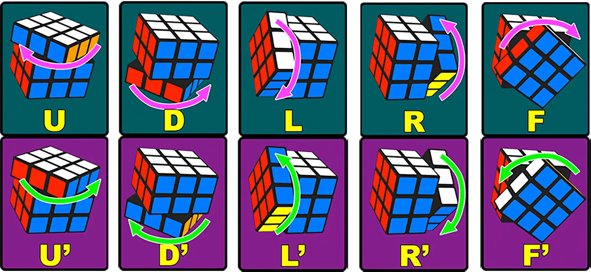

Lesson 2 · Solve the cube
Rubik’s Cube Guide
A slow, friendly 3x3 guide. Read it now. Practice when you have a cube.
Big idea: every piece has a home
The center squares are the bosses. They do not move to a new face. If the center is blue, that whole face’s home color is blue.
Center
1 color. It tells the face’s home color.
Edge
2 colors. It lives between two centers.
Corner
3 colors. It lives between three centers.
Move words

A little mark ' means “the other way” — counterclockwise while looking at that side.
A 2 means “turn twice.”
R right side L left side U top D bottom F front
Example: R U R' U' means right clockwise, top clockwise, right counterclockwise, top counterclockwise. This guide does not need the back-side letter B. A short move list like this is called an algorithm.
The whole solve, in tiny wins
1. Make a white daisy
Goal: hold the cube with the yellow center on top. Put four white edge pieces around that yellow center, like flower petals.
Only edges count here: pieces with white plus one other color.
2. Turn the daisy into a white cross
- Keep the yellow center on top. Pick one white petal in the daisy.
- Look at the petal’s other color. For example, a white-blue edge has a blue sticker too.
- Rotate only the top layer clockwise or counterclockwise until that other color lines up with the same color center. For example, move the white-blue petal to the blue side of the cube, so its blue sticker lines up with the blue center on that side.
- Face that matching center. Rotate that face clockwise two quarter-turns. This is a 180-degree move, so counterclockwise two quarter-turns also works. This moves the white petal from the top face down to the bottom face.
- Repeat these steps for each of the four white petals.
Stop when the bottom has a white plus sign, and the side color of each white edge matches its center.
3. Put in the white corners
Keep white on the bottom. Find a white corner on the top layer. Look at its two non-white colors. Turn the top layer clockwise or counterclockwise until that corner is in the top-front-right position, directly above the place where it belongs. The corner is in the right spot when its two non-white colors match the front center and the right center. Use the algorithm until the corner drops into that bottom-front-right spot:
R U R' U'
If a white corner is in the bottom layer but not solved, use the algorithm once to move it up to the top layer. Then line it up above its correct corner spot and solve it normally.
4. Fill the middle floor
Find an edge piece on the top layer that does not have yellow on it. This piece belongs in the middle layer.
Turn only the top layer until the color on the front of that edge matches the front center color.
Now look at the color on the top of that edge piece:
- If that color matches the center on the right side, use Send right.
- If that color matches the center on the left side, use Send left.
Keep doing this until the middle row on each side face is solved. On every side face, the center sticker and the two edge stickers next to it should all be the same color. Each middle-layer edge should sit between the two centers that match its colors.
Send right: U R U' R' U' F' U F
Send left: U' L' U L U F U' F'
If every top edge has yellow, but the middle layer is not finished, one middle edge is probably stuck in the wrong place. Use either algorithm to move it up to the top, then solve it normally.
5. Make a yellow cross
Look only at yellow edge stickers on top. Use this algorithm until you see a yellow plus sign:
F R U R' U' F'
Dot → little L → line → cross. If you see a line, hold it sideways like a road going left-right. If you see a little L, hold it so its yellow edge stickers point to the back and left before the algorithm.
6. Line up the yellow cross side colors
Turn the top until yellow-edge side colors match their centers. If all four match, you are done with this step. If two next-door edges match, hold the matching ones at the back and right. If two opposite edges match, do the algorithm once, then check again:
R U R' U R U2 R' U
After each try, turn only the top to see which side colors match now.
7. Put yellow corners in their homes
A corner is “home” when its three colors match the three centers around it. It may be twisted; that is okay.
If one corner is home, hold it at the front-right-top. Then use:
U R U' L' U R' U' L
After the algorithm, check again. If the corners are still not all in their homes, keep a home corner at front-right-top and do the algorithm again. You may need it twice. If no corner is home, do the algorithm once, then check again.
8. Twist yellow corners to finish
Put an unsolved yellow corner at the front-right-top. Repeat this until yellow points up:
R' D' R D
Then turn only the top U to bring the next unsolved corner to front-right-top. Keep going.
Do not panic: the bottom may look broken while you twist corners. It comes back when all corners are done. Do not rotate the whole cube between corners. Only turn the top layer with U.
Practice rule
Do not try to memorize the whole page. Use one tiny win at a time. Point at the step, do it, then move on.
This guide mainly follows the Ruwix Beginner’s Method. Rubik’s official solution guides show another beginner-friendly version.